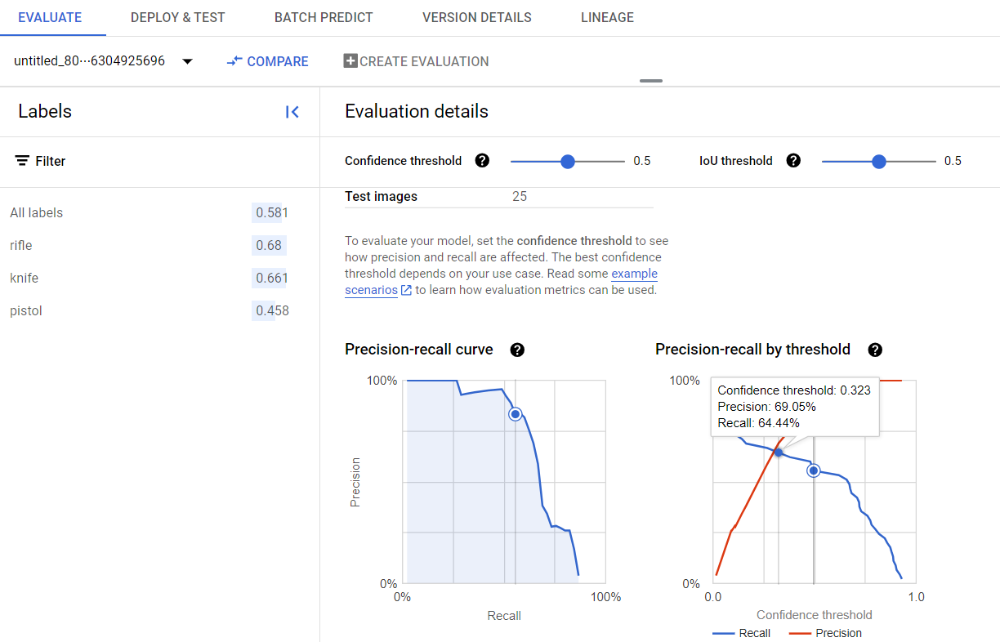
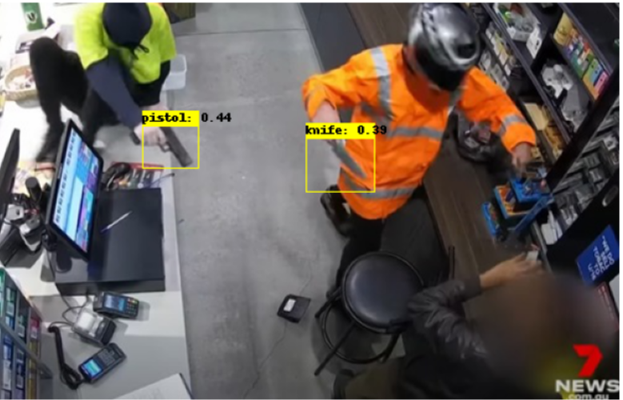

Trained and deployed a AutoML object detection model on weapon class, rifle, pistol, and knife. This significantly enhances security by swiftly detecting the presence of weapons, enabling faster response times. In countries like the United States, where carrying weapons are legal, armed robbery and school shootings are on the rise, this model can monitor and scan for potential threats in vulnerable locations such as schools and airports. While humans cannot be everywhere at once, this system supplements human presence by continuously monitoring and providing immediate alerts. Additionally, it enables proactive risk management by identifying potential threats before they materialize. I will be training my model to recognise rifles, pistols, and knives, as these are the most commonly used and deadly weapons. I will be getting around 90 images per category, and images will be formatted to jpg, with various types, angles and lighting conditions, as well as how they are carried
My dataset is from roboflow https://universe.roboflow.com/ashish-cuamw/test-y7rj3
To keep cost down, I only used 260 images from all downloaded dataset
Data Cleaning
Checking image quality
Edit the data.csv (annotation file)
Existing data.csv file from makesense.ai only give top left vertice coordinate with the image width and height
After the images and annotation file was finalised and uploaded into Google Cloud Storage Bucket, the AutoML model was trained and deployed for use.
Model average precision was 0.58 for all labels, but if confidence level is adjusted to 0.323, precision and recall values are more balanced at around 0.64

Model Predictions

The model was able to accurately identify the objects in the image. But boxes drawn are not the best, with extra space (knife object) and not boxing the full object (pistol object). Despite accurate results, the confidence values are relatively low.
It was able to correctly identify most of the class in an image, but sometimes it mislabelled or didnt detect the object class at all, within my confidence threshold.
This results are not bad but could be better
might be caused by issues in training images:
My testing images tend to be more complex with more background noise because i wanted to see if it can be applied in a real setting like my business case.
This model can be improved by using more data, bounding boxes, have less overlaps and try to use images with a higher brightness.
Achieved A Grade for this Module